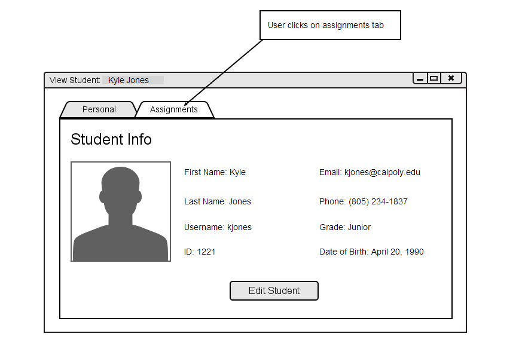
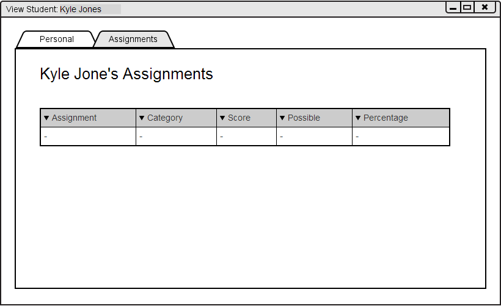

When the user clicks on the Assignments tab in the View Student window, as shown in Figure 2.3.4.C, the View Assignemt tab is brought to the screen as shown in Figure 2.3.4.D.

Figure 2.3.4.C: Click on Assignments to switch tabs.

Figure 2.3.4.D: View Student Assignments.